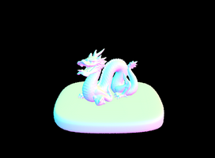
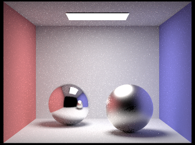

CS184/284A Spring 2025 Homework 3 Write-Up
Link to webpage: cal-cs184-student.github.io/hw-webpages-super-awesome-team/hw3/index.html Link to GitHub repository: Github
Overview
This project focuses on fundamental ray-tracing techniques, including Lambertian BRDFs, bounding volume hierarchies (BVH), Monte Carlo estimators for direct and global illumination, and adaptive sampling using confidence intervals.Part 1: Ray Generation and Scene Intersection
Rays were cast from the camera into the scene, treating the camera as a single point and simulating a virtual image plane. For each pixel, multiple samples were taken by generating corresponding rays. The Möller-Trombore algorithm was used to check for intersections between these rays and objects in the scene.Part 2: Bounding Volume Hierarchy (BVH)
A BVH was built to efficiently organize scene primitives by splitting them into hierarchical bounding boxes using their midpoints as a heuristic. Ray intersection tests were implemented for both bounding boxes and individual primitives within the BVH structure.Part 3: Direct Illumination
A diffuse BSDF was used to model light scattering uniformly across a hemisphere. Zero-bounce illumination (directly from light sources) and one-bounce illumination were implemented using uniform hemisphere sampling and importance sampling for better efficiency in capturing light contributions.Part 4: Global Illumination
Recursive bounces were added using indirect illumination to simulate realistic lighting. The implementation allowed for either accumulating multiple bounces (full global illumination) or isolating a specific bounce. Russian Roulette was used to terminate ray bounces, reducing bias while maintaining efficiency probabilistically.Part 5: Adaptive Sampling
To improve rendering efficiency, adaptive sampling was applied using a 95% confidence interval. Instead of assigning a fixed number of samples to all pixels, the number of samples was dynamically adjusted based on convergence, allowing faster convergence in low-variance areas while focusing more samples on noisier regions.Part 1: Ray Generation and Primitive Intersection
Walk through the ray generation and primitive intersection parts of the rendering pipeline. Explain the triangle intersection algorithm you implemented in your own words. Show images with normal shading for a few small .dae files. To generate rays from the camera, we transform coordinates from image space to camera space and then to world space. The camera is modeled as a pinhole camera, with its position at the origin in camera space and its sensor placed at (0, 0, -1). Given the unrendered corners (x,y) = (0,0) and (1,1), we converted to camera space using the horizontal and vertical field of view parameters (hFov and vFov, which are the view angles along the X and Y axes respectively). After that, we transform the image in camera space and offset our camera sensor by -1 in the Z-coordinate. The diagram summarizes the transformations as shown below: \[ (0,0,-1) \rightarrow (-\tan(hFov/2) \cdot x_{imagespace}, -\tan(hFov/2) \cdot y_{imagespace}, -1) \] \[ (1,1,-1) \rightarrow (\tan(hFov/2) \cdot x_{imagespace}, \tan(hFov/2) \cdot y_{imagespace}, -1) \]

|
|
|
|
|
Part 2: Bounding Volume Hierarchy
Walk through your BVH construction algorithm. Explain the heuristic you chose for picking the splitting point. Show images with normal shading for a few large .dae files that you can only render with BVH acceleration. Compare rendering times on a few scenes with moderately complex geometries with and without BVH acceleration. Present your results in a one-paragraph analysis. The Bounding Volume Hierarchy (BVH) construction algorithm is a critical component of the rendering pipeline, designed to accelerate the ray-primitive intersection test by organizing primitives into a hierarchical tree of bounding boxes. The process begins by considering all primitives within the current bounding box and computing their midpoints. A node is created for a current list of primitives, and if the number of primitives exceeds the max_leaf_size, the bounding box is split along its longest axis, determined by the extent of the bounding box of the primitives’ centroids. The primitives are then partitioned into two groups based on their centroids’ positions relative to the split point. This process is repeated recursively for each group until all nodes become leaf nodes, meaning they contain no more than max_leaf_size primitives. This hierarchical structure allows the renderer to quickly discard rays that do not intersect with a bounding box, significantly reducing the number of intersection tests required.|
|

|
|
|
|
Part 3: Direct Illumination
Walk through both implementations of the direct lighting function. Show some images rendered with both implementations of the direct lighting function. Focus on one particular scene with at least one area light and compare the noise levels in soft shadows when rendering with 1, 4, 16, and 64 light rays (the -l flag) and with 1 sample per pixel (the -s flag) using light sampling, not uniform hemisphere sampling. Compare the results between uniform hemisphere sampling and lighting sampling in a one-paragraph analysis. The direct lighting function plays a crucial role in estimating how light interacts with surfaces in a scene. Two approaches were implemented to achieve this: uniform hemisphere sampling and importance sampling of light sources. Both methods rely on Monte Carlo integration to approximate the light contribution at a given point, but they differ in how they sample light directions. The equation of the function is shown below: \[ L_{out}(p, \omega_r) \approx \sum_{j=1}^{N} \frac{L_i(p, \omega_j) \cdot f_r(p, \omega_j \rightarrow \omega_r) \cdot \cos(\theta_j)}{p(\omega_j)} \] Uniform Hemisphere Sampling generates rays uniformly across a hemisphere centered at the intersection point. For each ray, the algorithm calculates the incoming light \( L_i(p, \omega_j) \) from the sampled direction and evaluates the Bidirectional Reflectance Distribution Function (BRDF) \( f_r(p, \omega_j \rightarrow \omega_r) \) to determine how the light reflects off the surface. The algorithm works as follows:- A local coordinate system is created at the intersection point, with the surface normal aligned with the Z-axis to allow easier sampling in the hemisphere.
- For each sample, a direction is randomly chosen within the hemisphere using a uniform distribution. The direction is transformed from object space to world space.
- A ray is cast from the intersection point in the sampled direction. The ray’s minimum distance min_t is set to a small epsilon to avoid self-intersection.
- If the ray intersects a light source, the light’s emission is evaluated. The Bidirectional Scattering Distribution Function (BSDF) is used to determine how the light reflects off the surface. The contribution of each sample is weighted by the cosine of the angle between the sampled direction and the surface normal, as well as the probability density function (PDF) of the hemisphere sampling.
- The contribution of all samples is averaged to compute the final radiance.
- The algorithm determines the number of samples for each light source in the scene. Only one sample is needed for delta lights (e.g., point lights), while area lights require multiple samples.
- For each sample, the light source is sampled to obtain a direction, distance to the light distToLight, and the probability density function pdf. The direction is transformed from world space to object space.
- A shadow ray is cast from the intersection point toward the light source. The ray’s maximum distance max_t is set to distToLight to avoid overshooting the light. If the ray does not interact with any occluding objects, the light’s contribution is computed.
- The BSDF is evaluated to determine how the light reflects off the surface. The contribution of each sample is weighted by the cosine of the angle between the sampled direction and the surface normal, as well as the PDF of the light sampling.
- The contributions of all samples are averaged to compute the final radiance.
|
|
|
Comparison of Sampling Methods
Uniform hemisphere sampling tends to produce noisy images, especially in scenes with complex lighting, because it does not prioritize sampling light sources.
In contrast, importance sampling focuses on light sources that contribute the most to the scene, resulting in reduced noise and faster convergence.
For example, in the bunny.dae, the uniform hemisphere sampling method produces a grainy background and blurred lighting,
while importance sampling yields a crisp, noise-free image with well-defined shadows.
In short, importance sampling is better in terms of achieving high-quality renders with fewer samples.
|
|
|
|
|
|
Noise Levels in Soft Shadows
To analyze noise levels, the bunny.dae scene was rendered using importance sampling with 1, 4, 16, and 64 light rays, all with 1 sample per pixel.
The results show that as the number of light rays increases, the noise in soft shadows decreases significantly.
With 1 light ray, the shadows are scattered and noisy, but with 64 light rays, the shadows become smooth and well-defined.
This goes to show the importance of increasing the number of light rays to reduce noise in soft shadows.
Part 4: Global Illumination
Walk through your implementation of the indirect lighting function.
Global illumination simulates realistic lighting by accounting for both direct and indirect light contributions. While direct lighting computes light arriving directly from light sources, indirect lighting captures light that bounces off surfaces before reaching the camera. This is achieved through recursive ray tracing, where rays are cast from surface intersections to gather light contributions from other surfaces. The indirect lighting function works as follows:
- At each surface intersection, a new ray is generated with its origin at the intersection point and its direction sampled using the BSDF’s sample_f function. This direction determines where the ray will bounce next.
- The radiance contribution from the next bounce is computed using the Monte Carlo estimator: \[ L_{out}(p, \omega_r) = \text{OneBounce}(ray_{current}) + \sum_{j=1}^{N} \frac{L_i(p, \omega_j) \cdot f_r(p, \omega_j \rightarrow \omega_r) \cdot \cos(\theta_j)}{p(\omega_j)} \] where \( L_i(p, \omega_j) \) is the incoming radiance from the next bounce.
- The recursion continues until the maximum ray depth is reached or the ray does not intersect any surface. At each step, the ray depth is decremented, and the recursion stops when the depth reaches 1.
- To optimize performance, Russian Roulette is used to probabilistically terminate rays. This prevents infinite recursion while maintaining unbiased results. The termination probability is typically set between [0.30, 0.40], and the radiance contribution is divided by the continuation probability to compensate for the early termination.

Show some images rendered with global (direct and indirect) illumination. Use 1024 samples per pixel.
Scenes such as CBspheres_lambertian.dae, blob.dae, wall-e.dae, and bench.dae were rendered with global illumination (direct and indirect lighting) using 1024 samples per pixel. The results demonstrate realistic lighting effects, including color bleeding and soft shadows, which are not achievable with direct illumination alone.
Pick one scene and compare rendered views first with only direct illumination, then only indirect illumination. Use 1024 samples per pixel. (You will have to edit PathTracer::at_least_one_bounce_radiance(...) in your code to generate these views.)
To compare direct and indirect illumination, the CBspheres_lambertian.dae scene was rendered with each method separately:
- Direct Illumination: Only light arriving directly from light sources is considered. Shadows appear dark and lack detail, as no light bounces are simulated.
- Indirect Illumination: Only light arriving from bounces is considered. The results show color bleeding, where light from the red and blue walls bounces onto the spheres, illuminating their shadows.
|
|
|
For CBbunny.dae, render the mth bounce of light with max_ray_depth set to 0, 1, 2, 3, 4, and 5 (the -m flag), and isAccumBounces=false. Explain in your write-up what you see for the 2nd and 3rd bounce of light, and how it contributes to the quality of the rendered image compared to rasterization. Use 1024 samples per pixel.
To provide more flexibility in rendering, we also added support for isolating the mth bounce of light instead of accumulating light from all bounces up to the maximum ray depth. This is controlled by the isAccumBounces parameter, which can be set to false to render only the mth bounce. When comparing renders of the second and third bounces, noticeable differences in exposure and lighting quality emerge. The second bounce (max_ray_depth = 2) produces a brighter image compared to the third bounce (max_ray_depth = 3), which appears softer and more diffused. This is because higher bounces simulate light scattering over greater distances, naturally softening shadows and reducing contrast. Ray tracing, with its physically accurate sampling, captures these subtle lighting effects. While rasterization is faster, it sacrifices accuracy in modeling light interactions and surface details. In short, there’s a tradeoff, which highlights the strengths of ray tracing for realistic rendering, even at the cost of increased computational complexity.
|
|
|
|
|
|
|
|
|
Compare rendered views of accumulated and unaccumulated bounces for CBbunny.dae with max_ray_depth set to 0, 1, 2, 3, 4, and 5 (the -m flag). Use 1024 samples per pixel.
For CBbunny.dae, the m-th bounce of light was rendered with max_ray_depth set to 0, 1, 2, 3, 4, and 5 (isAccumBounces=true, 1024 samples per pixel). Key observations:
- Bounce 0: Only direct light is visible.
- Bounce 1: Light from the first bounce illuminates surfaces directly visible to light sources.
- Bounce 2-5: Higher bounces contribute to softer lighting and color bleeding. As the bounce number increases, we see less noticeable differences.
|
|
|
|
|
|
|
|
|
For CBbunny.dae, output the Russian Roulette rendering with max_ray_depth set to 0, 1, 2, 3, 4, and 100 (the -m flag). Use 1024 samples per pixel.
We now add Russian Roulette to our implementation for Global Illumination. We can randomly terminate the recursion for ray tracing with a probability of ~0.35 and divide by this probability in the Monte Carlo estimator. By adding Russian Roulette, we can eliminate the sampling bias in our estimator for global illumination. This allows us to render images with a large max ray depth such as 100 a lot faster than before, nearly as quick as rendering images with a max_ray_depth of 4 without it.
|
|
|
|
|
|
|
|
|
|
|
Pick one scene and compare rendered views with various sample-per-pixel rates, including at least 1, 2, 4, 8, 16, 64, and 1024. Use 4 light rays.
With 4 light rays and max_ray_depth = 5, the noise in the image decreases as we increase the sample size. By increasing the samples per pixel, we converge to a better predictor of the actual amount of light being emitted on a particular pixel. Key findings with CBspheres_microfacet_al_ag.dae:
- Low Samples (1-16): The image is noisy due to insufficient sampling.
- High Samples (64-1024): The noise decreases significantly, and the image converges to a more accurate representation of the lighting.
|
|
|
|
|
|
|
|
|
|

|
With that being said, Global illumination enhances realism by simulating both direct and indirect lighting. Recursive ray tracing, combined with Monte Carlo estimation and Russian Roulette, enables efficient computation of light bounces. Higher sample rates and ray depths improve image quality but with diminishing returns. Global illumination has a tradeoff between accuracy and computational cost.
Part 5: Adaptive Sampling
Explain adaptive sampling. Walk through your implementation of the adaptive sampling.
Adaptive sampling is a technique used in Monte Carlo path tracing to optimize rendering efficiency by dynamically adjusting the number of samples per pixel based on how quickly the pixel’s illuminance converges. Instead of using a fixed, high number of samples for all pixels, adaptive sampling focuses computational resources on regions of the image that require more samples to reduce noise, while terminating sampling early for pixels that have already converged. This approach significantly reduces rendering time without sacrificing image quality. The adaptive sampling algorithm works as follows:
- For each pixel, the algorithm computes a confidence interval to determine whether the pixel’s illuminance has converged. The confidence interval is given by:
\[
I = 1.96 \cdot \frac{\sigma}{\sqrt{n}}
\]
where:
- \(\sigma\) is the standard deviation of the samples,
- \(n\) is the number of samples taken so far,
- 1.96 is the z-score for a 95% confidence level.
- The pixel is considered converged if: \[ I \leq \text{maxTolerance} \cdot \mu \] where \(\mu\) is the mean illuminance of the samples, and maxTolerance is a user-defined threshold (default is 0.05).
- If the pixel has converged, sampling is terminated early. Otherwise, sampling continues until the maximum number of samples per pixel (ns_aa) is reached.
- To reduce computational overhead, the convergence check is performed on every samplesPerBatch sample (default is 32), rather than after every sample.
The implementation of adaptive sampling involves the following steps:
- For each pixel, two variables are maintained:
- \(s1 = \sum_{k=1}^{n} x_k\), the sum of the sample illuminances,
- \(s2 = \sum_{k=1}^{n} x_k^2\), the sum of the squares of the sample illuminances.
- After every samplesPerBatch sample, the confidence interval \(I\) is computed and compared to the convergence condition. If the condition is met, sampling for the pixel is terminated.
- The actual number of samples used for each pixel is stored in the sampleCountBuffer, which is used to generate the sampling rate image.
Pick two scenes and render them with at least 2048 samples per pixel. Show a good sampling rate image with clearly visible differences in sampling rate over various regions and pixels. Include both your sample rate image, which shows how your adaptive sampling changes depending on which part of the image you are rendering, and your noise-free rendered result. Use 1 sample per light and at least 5 for max ray depth.
We will observe in the following images (max_ray_depth = 5, 2048 samples per pixel) that the shadows require more samples, while the flat surfaces need less to converge. This means that non-flat surfaces and shadows exhibit higher sampling rates.
|
|
|
|
|
|
By dynamically adjusting the number of samples per pixel, adaptive sampling reduces rendering time without compromising image quality. This makes it an essential technique for efficient and realistic Monte Carlo path tracing.